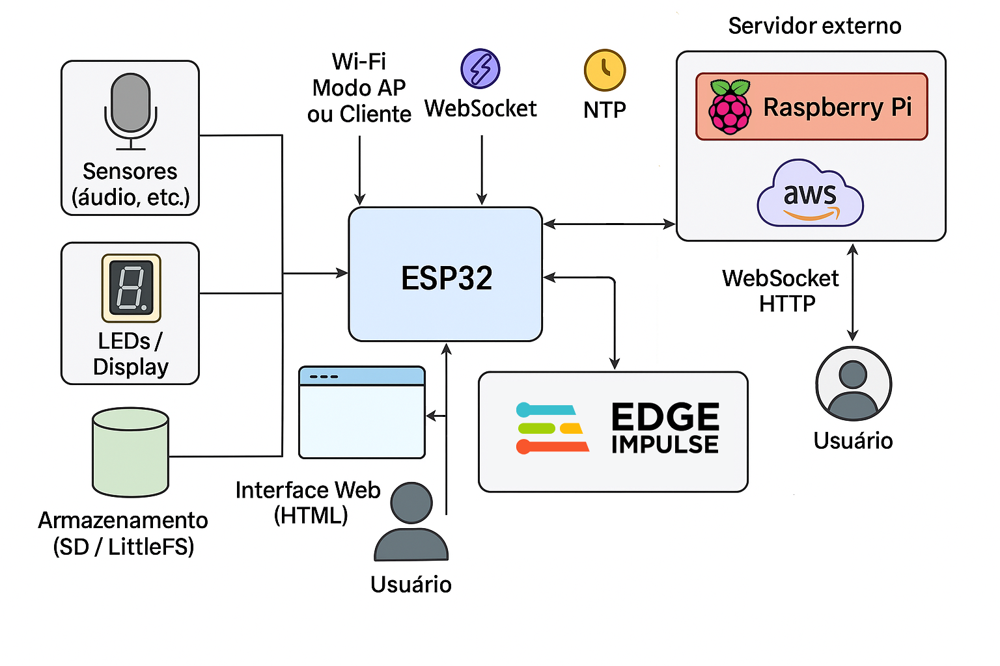

⚙️ ECHO_ENGINE — Arquitetura do Sistema
Bem-vindo à explicação de como o ECHO-ENGINE funciona! Esta página foi projetada para ser simples e acessível, mesmo para quem não é especialista em tecnologia ou IoT (Internet das Coisas, que é basicamente conectar dispositivos à internet para trocar dados). Vamos explicar passo a passo, usando linguagem cotidiana. Se aparecer um termo mais técnico, vamos adicionar uma breve explicação entre parênteses.
🔧 Visão Geral do Aparelho
O ECHO-ENGINE é um dispositivo compacto e inteligente projetado para monitorar e gerenciar níveis de ruído em ambientes como salas de aula, especialmente para ajudar crianças autistas que podem ser sensíveis a sons altos. Ele age como um "semáforo sonoro" – um sistema de alerta visual simples que usa luzes para indicar o nível de barulho.
Dimensões: O aparelho cabe em um pequeno gabinete de aproximadamente 220 mm de largura, 160 mm de altura e 60 mm de profundidade (semelhante ao tamanho de um livro pequeno).
Painel Frontal: Há três grupos de LEDs (luzes pequenas e coloridas, como as de um controle remoto), com 5 LEDs por grupo.
🔵 LEDs azuis pulsam suavemente para mostrar que o sistema está ligado e tudo está calmo.
🟡 LEDs amarelos acendem quando o som começa a ficar incômodo, servindo como um alerta inicial.
🔴 LEDs vermelhos piscam em níveis de ruído perigosos, indicando que é hora de reduzir o barulho.
Instalação: O dispositivo é fixado na parede a cerca de 2,20 metros do chão, garantindo que tanto alunos quanto professores possam vê-lo facilmente.
⚙️ Como Ele Capta e Responde ao Som
No coração do ECHO-ENGINE está um microfone especial chamado INMP441 (um microfone digital que capta sons com precisão, sem distorções) conectado a um ESP32 (um pequeno chip de computador, ou microcontrolador, que processa informações rapidamente como um cérebro miniatura).
- O microfone "escuta" o som ambiente ao redor.
- O ESP32 analisa esses sons em tempo real e aciona os LEDs com base nos níveis de ruído:
- Baixo: LEDs azuis.
- Médio (incômodo): LEDs amarelos.
- Alto (perigoso): LEDs vermelhos.
- Isso fornece feedback imediato para todos na sala, ajudando a manter um ambiente mais tranquilo sem precisar de intervenções constantes.
Sons esporádicos, como uma tossida rápida, não afetam o sistema – ele foca em padrões contínuos para evitar alarmes falsos.
⚙️ Conexão e Configuração
O ECHO-ENGINE é flexível e pode funcionar de várias maneiras:
- Com Wi-Fi: Conectado a uma rede sem fio (como a internet de casa ou escola), ele envia dados para servidores externos (computadores remotos na nuvem) e pode ser configurado à distância.
- Sem Internet (Modo Autônomo): Funciona sozinho, sem conexão web. A configuração é feita via Bluetooth (conexão sem fio curta, como emparelhar fones de ouvido) ou Wi-Fi local usando qualquer celular Android.
- Modo Silencioso: Os dados são capturados e armazenados (e enviados, se conectado), mas sem acender os LEDs no painel – ideal para monitoramento discreto.
Todos os parâmetros, como limites de ruído ou idiomas, são ajustáveis via uma interface simples (uma tela no celular ou computador). O dispositivo suporta inicialmente 6 idiomas, e adicionar mais é fácil: as traduções ficam armazenadas na memória interna do ESP32 (usando um sistema chamado LittleFS, que é como um "pen drive" dentro do chip) e podem ser atualizadas conectando ao GitHub (um site para compartilhar códigos e arquivos).
Vários "protocolos" (conjuntos de regras personalizadas, como diferentes níveis de alerta para horários específicos) podem ser criados e salvos na memória para uso futuro.
⚙️ Armazenamento e Acesso aos Dados
Os dados coletados incluem níveis de som em dB SPL (decibéis, uma medida de intensidade sonora, com precisão de 1%) e timestamps (data e hora em UTC, que é o horário universal para evitar confusões de fuso horário).
- Armazenamento Interno: Os dados das últimas 24 horas ficam salvos no ESP32 e podem ser acessados localmente ou remotamente, inclusive em formato gráfico (como gráficos de linha mostrando variações ao longo do tempo).
📊 Diagrama do Sistema
Visualização da arquitetura neural com Edge Impulse:
